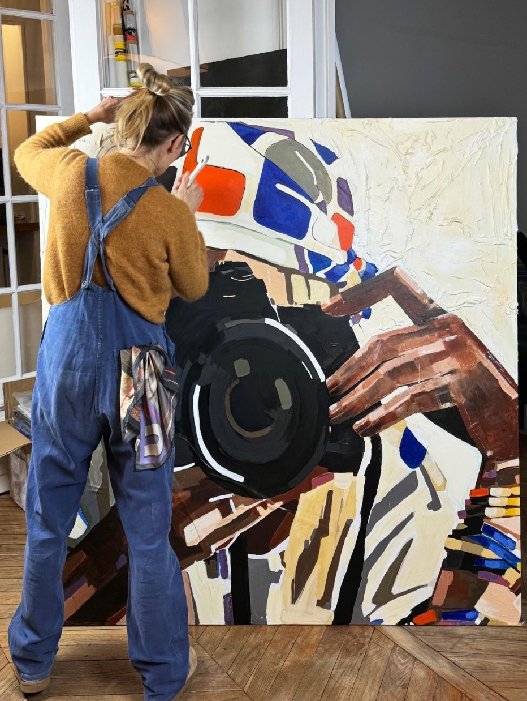

À Propos
Emmanuelle Legavre

Emmanuelle Legavre, fondatrice de la marque BE PARISIAN, est une artiste pluridisciplinaire accomplie : Architecte d'intérieur, designer de mobilier, Directrice artistique et plasticienne. Libre, elle avance sans complexe. Son crédo : s'affranchir des limites. Créatrice prolifique, elle capte, ressent et crée sans cesse… en quête du beau.
Pour cette collection, l'artiste réalise des sculptures et des œuvres contemporaines murales, tableaux et bas-reliefs. Elle s'appuie sur sa propre marque de mode, BE PARISIAN, et redéfinit les contours de son travail de créatrice. Il n'y a plus de frontière : de Directrice artistique, elle enfile son costume d'artiste plasticienne.
Son terreau réside dans les archives, les inspirations et les matières oubliées ou imparfaites de BE PARISIAN, elle en fait son médium. Soie, coton, papier, carton, toile, cuir, plumes… elle plonge avec avidité dans ces rebuts, les transforme et leur apporte une nouvelle noblesse, un nouveau beau.